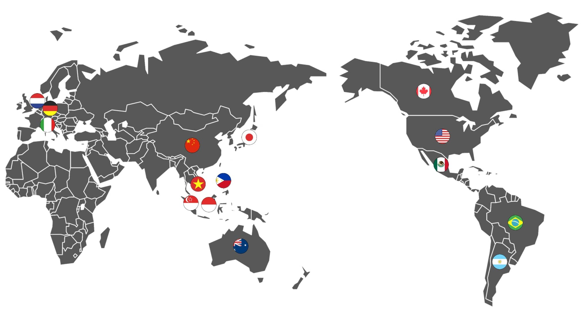

JIJU Logo
menu button
Story
Brand
History
Manufacturing
process
We Are
Social contribution
Campaign
News
Global
Product
Enjoy
Field trip
Experience
Event
Store
Global
지주는 우리 전통술의 가치와 풍부한 다양성을
알리기 위해 노력하고 있으며
세계 각지의 사람들이 지주 술의 매력을
경험하고 즐길 수 있도록
더 넓은 세계로
뻗어나가고 있습니다.

2002년, 최초 해외 수출 시작
지주는 2002년 최초로 미국과 일본에 막걸리 수출을 시작으로 베트남, 싱가포르 등
점차적으로 해외시장을 넓혀왔습니다.
지주만의 부드럽고 신선한 맛과 향으로
지금까지 큰 인기를 얻고 있습니다.
2008년, 증류주 및 과실주 첫 수출
2002년 수출을 시작으로 일본, 미국, 중국, 유럽, 동남아 국가 등에서 현지인의 입맛에 맞는 다양한 과실주를
개발하며 현지화 전략을 통해 한국 전통주 세계화에 앞장서고 있습니다.
현재 전 세계 30개국에 20여종의 제품을 수출하며 소비자들에게 한국 전통주의 가치를 전달하고, 다양한 문화와
언어적 차이를 고려하여 글로벌 시장에서의 경쟁력을 확보하는 것을 목표로 정진하고 있습니다.